傘の下
個人の勉強履歴です。
- 2/11 サイト改装。
- 2/10 資料庫を作った。
- ～2025/1/31 いろいろ。
- 11/26 依頼ジェネレータを作った。
- ～11/1 深海同盟を作った。
- ～10/25 目次JSやソロジャ支援ツールの強化。ソロジャ同盟の公開。PHPもちょっと触った。
- 10/8 目次追加JS、中原中也同盟を作った。更新履歴を忘れるくらいには作り慣れたらしい。
- 9/30 バナー画像作るやつを作った。文字のずれが気になる。
- 9/25 キャラのプロフを作るツールを作った。できた～。
- 9/22 メモを画像で保存するやつを作った。ちょうどいい感じ。
- 9/1 クエノのアクション再現を作った。
- 8/30 当倉庫を作り直し。
- 8/29～30 キャラ生成とカラパレを作った。html2canvasも実装した！ やった～～！！
- 8/29 HTMLテンプレート配布サイトを作った。作っておいて公開を忘れるのをどうにかしたい。
- 8/24 忘れていたソロジャサイトを公開した。テンプレとしてもいい感じなので、次を作る。
- 8/22 ソロジャ関連サイトを作った。ここもきれいにした。CSS割と楽しいかも。
- 8/20 ソロジャプレイ支援ツール作った。ついでに連絡先メールフォームを作った。
- 8/13 習作LMTPS作った。勉強の暫定履歴としてここを作った。
- 2024/8/10 勉強開始……
作った１

ソロジャーナルプレイ支援ツール
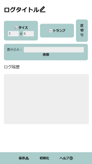ソロジャーナル向けの補助ツール。ダイス・トランプを引く、ログを書き込んだり.txtとして保存したりする、など。
ソロジャーナル制作物
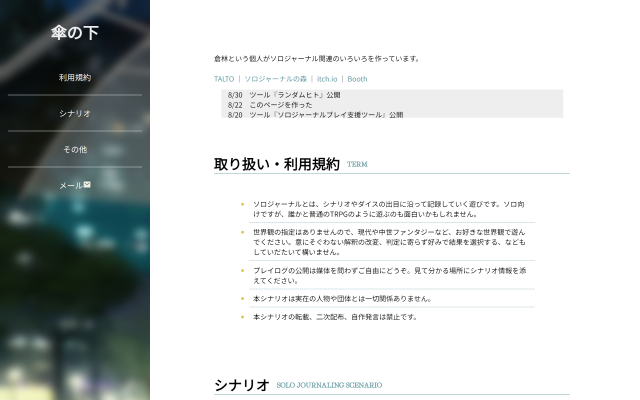ソロジャ関連の制作物（シナリオ・ツール）のまとめサイト。
HTMLテンプレート配布
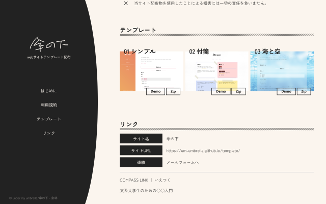HTML/CSSテンプレート配布サイト。
ランダムヒト
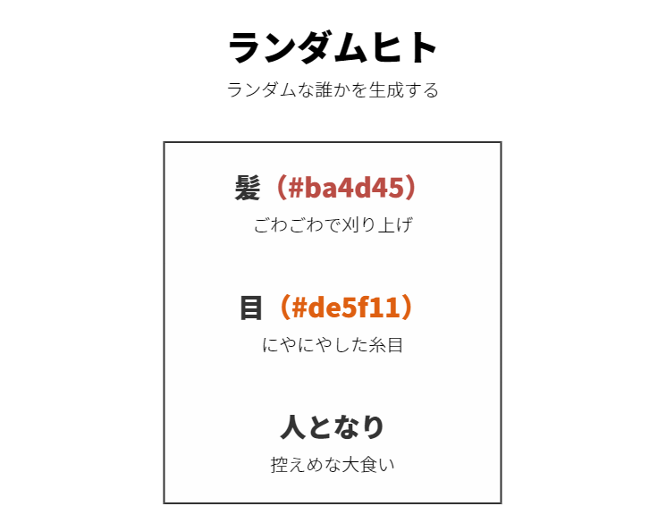キャラクター設定のランダム生成ツール。項目は三つ（＋二色）。スクショ保存機能付き。
two colors
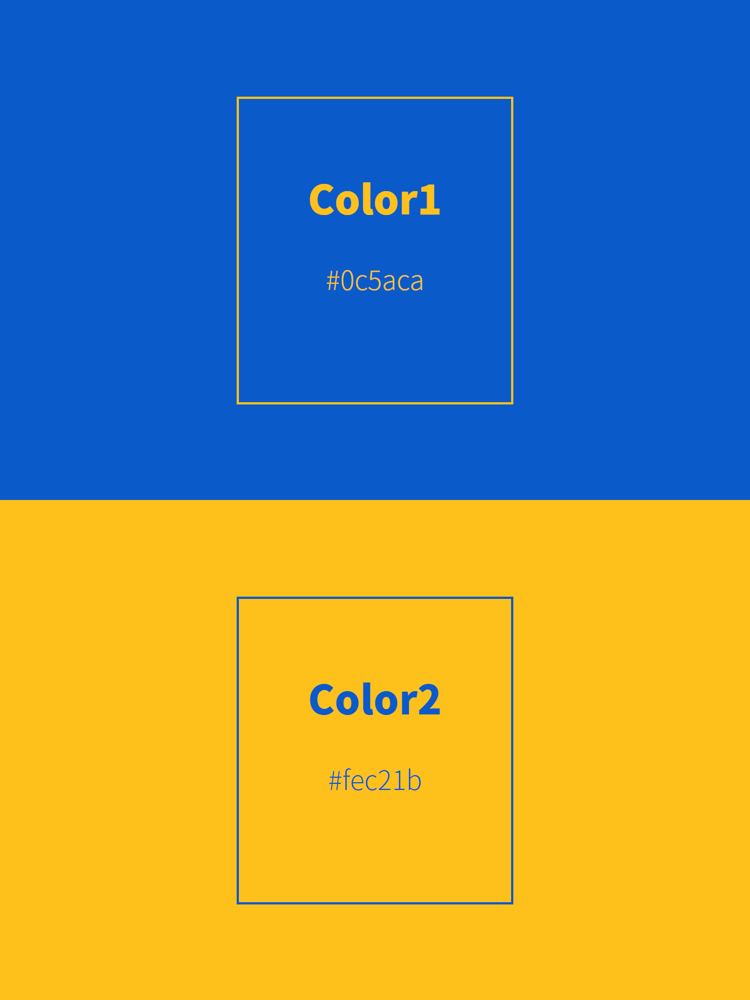クリックまたはキー押下ごとに色をランダム生成する。スクショ保存機能付き。
クエノのアクション画面を再現するやつ
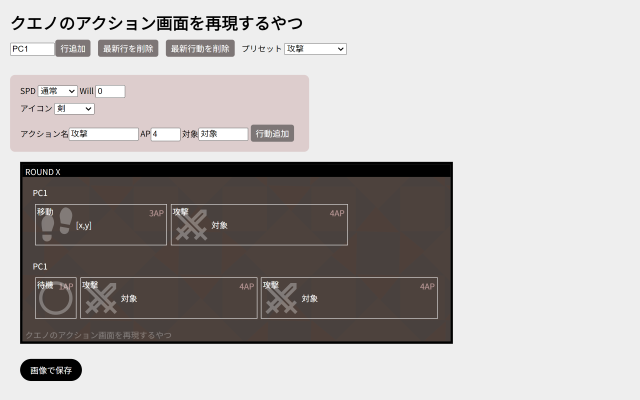行動をタイムラインに追加できる。保存機能付き。ちょっと分かりづらいのが反省点。
メモを画像で保存する
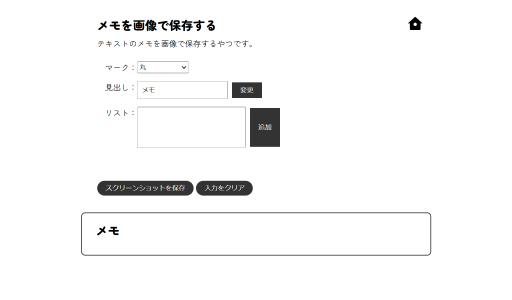タイトル通り。ほしいから作った。シンプル。
キャラのプロフを作るツール
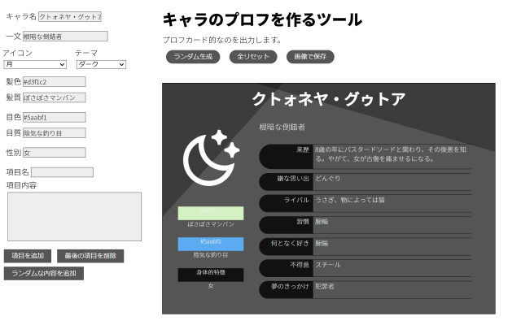キャラシを作る。欲しいから作った。欲しいからランダムも付けた。
バナー画像を作るやつ
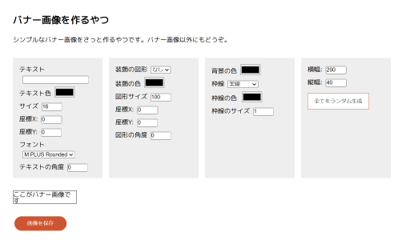バナーやその他の簡単な画像を作る。表示のズレがまだある。
中原中也同盟
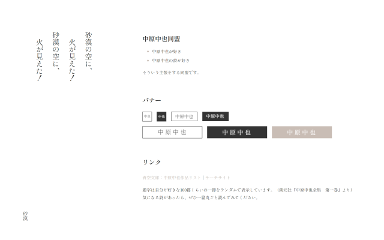同盟。いい感じ。
ソロジャーナル同盟
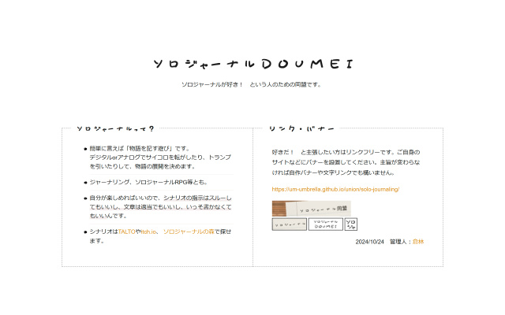同盟。デザインを参考にしつつ。いい感じ。
深海同盟
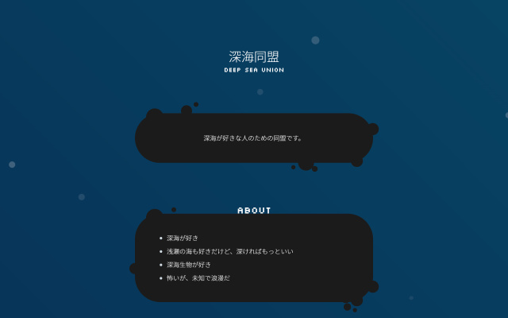同盟。ラフ通りに作れた。雰囲気はある。
依頼ジェネレータ
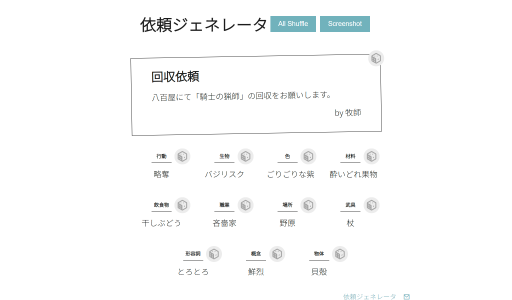ファンタジー依頼生成器。
１２月生まれを優遇するページ
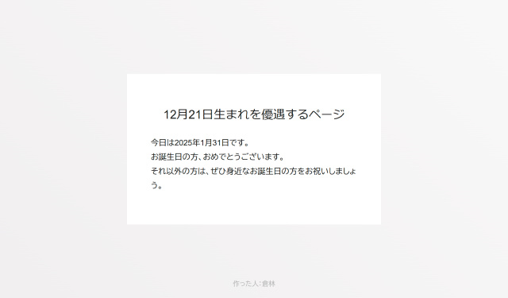人のお誕生日を祝いました。
ランダム依頼ジェネレータ
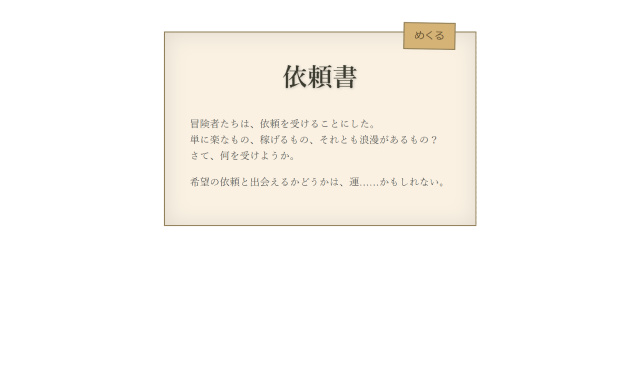またそういうの作ってる。
作った２
ChatGPTに力を借りたなど、完全な自力でないやつ。
旅のいちにち
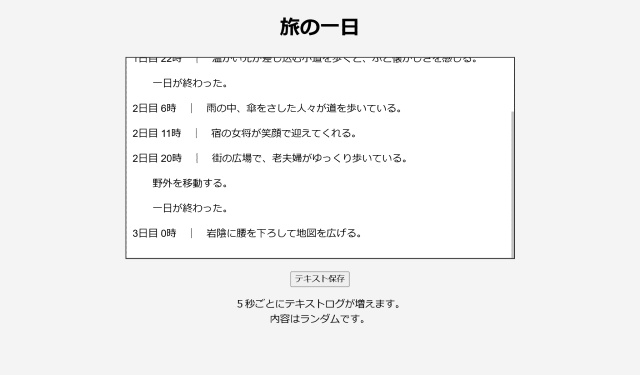操作不要な放置ゲーム。眺めるだけ。
資料庫
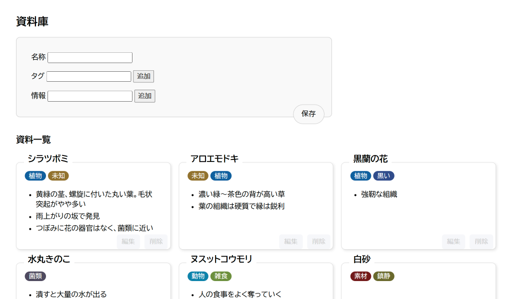ブラウザ上でメモをする。ローカルファイルに出力もする。
リンク
- 文系学生のための○○入門
- html/cssとJSの教科書
- Zenn
- エンジニアのための情報共有コミュニティ
- html2canvas
- ブラウザを画像として取得するスクリプト
- wireframe.cc
- オンラインワイヤフレーム
- Pa-Tu
- CSSパーツ、Tips、ジェネレータ
- DOODAD.dev
- シームレスデザインジェネレータ
- Godot Docs
- 公式チュートリアル
- 2dgames.jp
- チュートリアルや解説（4向け）
- Peanuts Code
- チュートリアル（3向け）